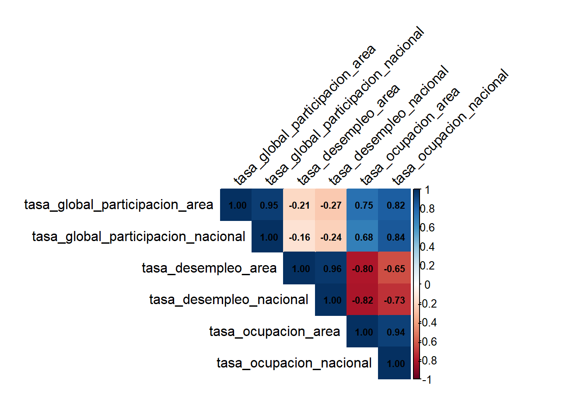
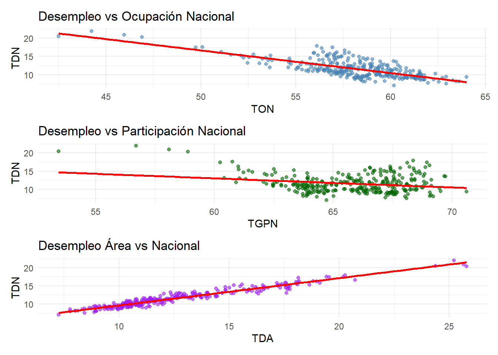
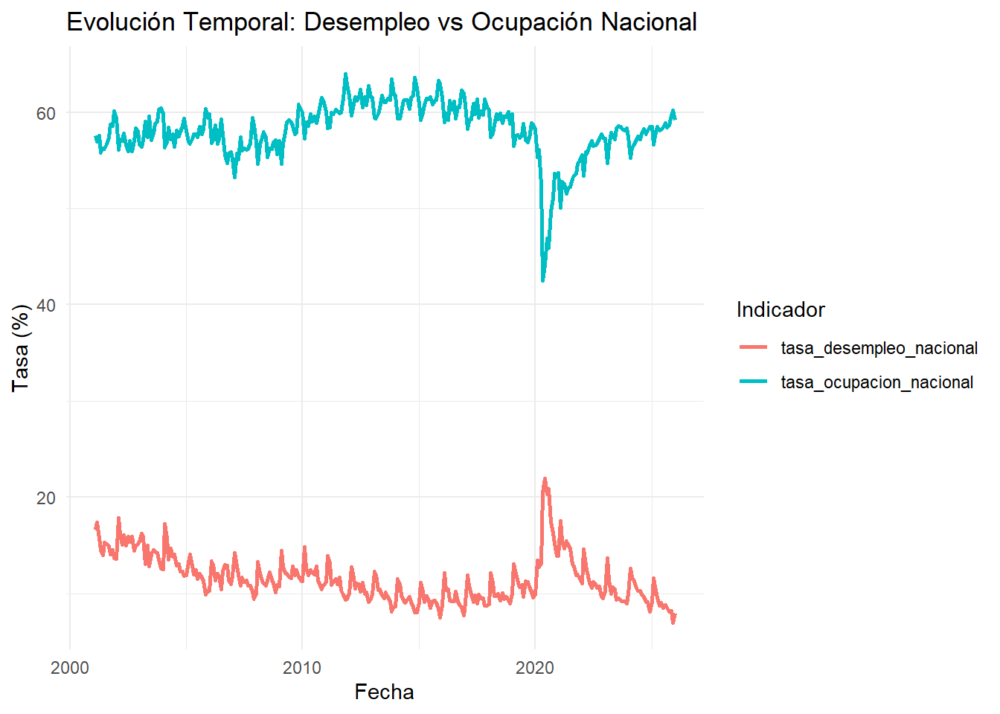

5 Analisis bivariado.
Después de analizar cada variable de forma individual y de explorar algunas relaciones mediante gráficos de dispersion, resulta util complementar con una matriz de correlación que ayudará a evaluar de manera conjunta la fuerza y la dirección de la relación lineal entre los indicadores del mercado laboral. Va a permitir detectar relaciones positivas o negativas entre los indicadores, lo cuan aporta una vision mas clara de la interacción entre las variables.
## corrplot 0.95 loadedMLC_corr <- MLC %>%
select(
tasa_global_participacion_area,
tasa_global_participacion_nacional,
tasa_desempleo_area,
tasa_desempleo_nacional,
tasa_ocupacion_area,
tasa_ocupacion_nacional
)
matriz_cor <- cor(MLC_corr,
use = "complete.obs",
method = "pearson")
corrplot(
matriz_cor,
method = "color",
type = "upper",
addCoef.col = "black",
tl.col = "black",
tl.srt = 45,
number.cex = 0.7
)
Al examinar la matriz de correlaciones, se identifican relaciones clave en el mercado laboral. Destaca una alta correlación positiva entre las tasas de desempleo de área y nacional (0.96), así como entre las tasas de ocupación de ambos niveles (0.94), lo que indica que los comportamientos locales y nacionales tienden a moverse de manera sincronizada. Asimismo, la participación global muestra una fuerte consistencia entre el área y la nación (0.95). Por otro lado, se observa una correlación negativa significativa entre la tasa de desempleo y la tasa de ocupación (aproximadamente -0.80 en ambos niveles), lo que refleja la relación inversa esperada: a mayor desempleo, menor ocupación. Finalmente, la participación global presenta una correlación moderada a alta con la ocupación (alrededor de 0.80), sugiriendo que una mayor participación en el mercado laboral se asocia con mayores niveles de ocupación, aunque su relación con el desempleo es débil y negativa.
Tomemos las variables en el grafico de dispersion como:
- Tasa de ocupacion nacional (TON)
- Tasa de desempleo nacional (TDN)
- Tasa global de participación nacional (TGPN)
- Tasa de desempleo area (TDA)
library(ggplot2)
library(patchwork)
g1 <- ggplot(MLC,
aes(x = tasa_ocupacion_nacional,
y = tasa_desempleo_nacional)) +
geom_point(color = "steelblue", alpha = 0.6) +
geom_smooth(method = "lm", se = FALSE, color = "red") +
labs(
title = "Desempleo vs Ocupación Nacional",
x = "TON",
y = "TDN"
) +
theme_minimal()
g2 <- ggplot(MLC,
aes(x = tasa_global_participacion_nacional,
y = tasa_desempleo_nacional)) +
geom_point(color = "darkgreen", alpha = 0.6) +
geom_smooth(method = "lm", se = FALSE, color = "red") +
labs(
title = "Desempleo vs Participación Nacional",
x = "TGPN",
y = "TDN"
) +
theme_minimal()
g3 <- ggplot(MLC,
aes(x = tasa_desempleo_area,
y = tasa_desempleo_nacional)) +
geom_point(color = "purple", alpha = 0.6) +
geom_smooth(method = "lm", se = FALSE, color = "red") +
labs(
title = "Desempleo Área vs Nacional",
x = "TDA",
y = "TDN"
) +
theme_minimal()
g1 / g2 / g3## `geom_smooth()` using formula = 'y ~ x'
## `geom_smooth()` using formula = 'y ~ x'
## `geom_smooth()` using formula = 'y ~ x'
Al analizar las relaciones gráficas entre los indicadores del mercado laboral, se observan patrones claros y consistentes con la teoría económica. En el primer gráfico, Desempleo vs Ocupación Nacional, se aprecia una clara relación inversa: a medida que aumenta la tasa de ocupación (TON), la tasa de desempleo nacional (TDN) tiende a disminuir, con puntos que oscilan entre aproximadamente 45% y 65% de ocupación y desempleo que va del 20% a valores cercanos a cero. En el segundo gráfico, Desempleo vs Participación Nacional, la relación es menos pronunciada pero también negativa: cuando la participación global (TGPN) aumenta —ubicándose entre 55% y 70%—, el desempleo tiende a reducirse, aunque con mayor dispersión. Finalmente, el gráfico Desempleo Área vs Nacional confirma una fuerte correlación positiva, donde los puntos se alinean casi perfectamente en una tendencia lineal ascendente, indicando que el comportamiento del desempleo a nivel local replica fielmente el comportamiento nacional.
- Dado que los datos corresponden a observaciones mensuales a lo largo del tiempo, es importante analizar el comportamiento de la variable objetivo desde una perspectiva temporal. Un gráfico de evolución temporal permite visualizar tendencias, cambios estructurales y posibles periodos de incremento o disminución del desempleo a lo largo del período de estudio. Vamos a analizar la variable objetivo respecto a la ocupación donde se refleja:
1. Cuando ocupación sube → desempleo baja.
2. Comportamiento inverso del mercado laboral.
library(tidyr)
library(ggplot2)
library(dplyr)
MLC_temp1 <- MLC %>%
select(
fecha,
tasa_desempleo_nacional,
tasa_ocupacion_nacional
) %>%
pivot_longer(
-fecha,
names_to = "variable",
values_to = "valor"
)
ggplot(MLC_temp1,
aes(x = fecha, y = valor, color = variable)) +
geom_line(linewidth = 1) +
labs(
title = "Evolución Temporal: Desempleo vs Ocupación Nacional",
x = "Fecha",
y = "Tasa (%)",
color = "Indicador"
) +
theme_minimal()
Al observar la evolución temporal del mercado laboral nacional entre los años 2000 y 2025, se identifican dinámicas inversas y claramente definidas entre el desempleo y la ocupación. La tasa de desempleo nacional (línea azul) muestra picos pronunciados en periodos de crisis especialmente alrededor de 2010 y nuevamente cerca de 2020, coincidiendo con caídas simultáneas en la tasa de ocupación nacional (línea roja), lo que refleja la sensibilidad del empleo ante choques económicos. En contraste, en los periodos de recuperación, la ocupación aumenta mientras el desempleo desciende, manteniendo consistentemente la relación inversa esperada entre ambos indicadores. Esta gráfica valida visualmente la correlación negativa observada en análisis anteriores y permite identificar con claridad los momentos de mayor tensión en el mercado laboral a lo largo de las últimas dos décadas.